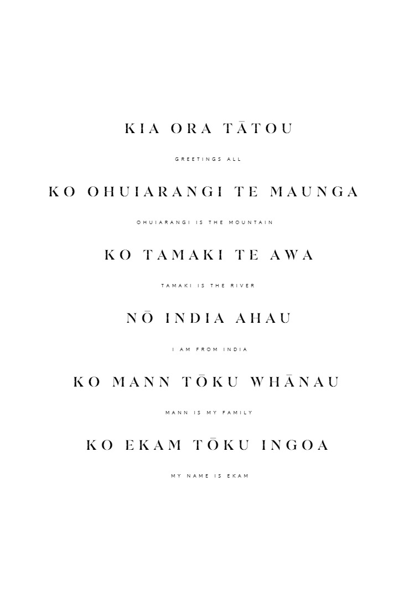

My name is Ekam, although my entire name is Ekamnoor Kaur Mann, but most people can't pronounce my first name so therefore I go by Ekam. I am currently 14 years old, and I go to Botany Downs Secondary College. I am in year 10. I was born in Auckland, New Zealand. My parents are both Indian and born there, which makes me Indian. However, since I was born in New Zealand, I have a New Zealand passport and an overseas citizenship of India. I have lived in New Zealand my whole life. I have been to a few countries like Singapore, Hong Kong, India, America, Australia, Malaysia, and Indonesia. I will also be going to India, Fiji, Pakistan, and Hong Kong at the end of this year.In school, I currently take media Design and Visual Communication. (10DVC), digital technology (10DIT), business pathways (10BUP). I am planning to become either an engineer or an architect. Ever since I was born on the 8th of Janurary 2010 I have moved quite a few times in my life time, One of the biggest changes of my life was moving from Coromandel back to Auckland in the middle of 2019.
Ekam Mann

 email:ekamnoorkaur.man@mybdscschool.nz
email:ekamnoorkaur.man@mybdscschool.nz